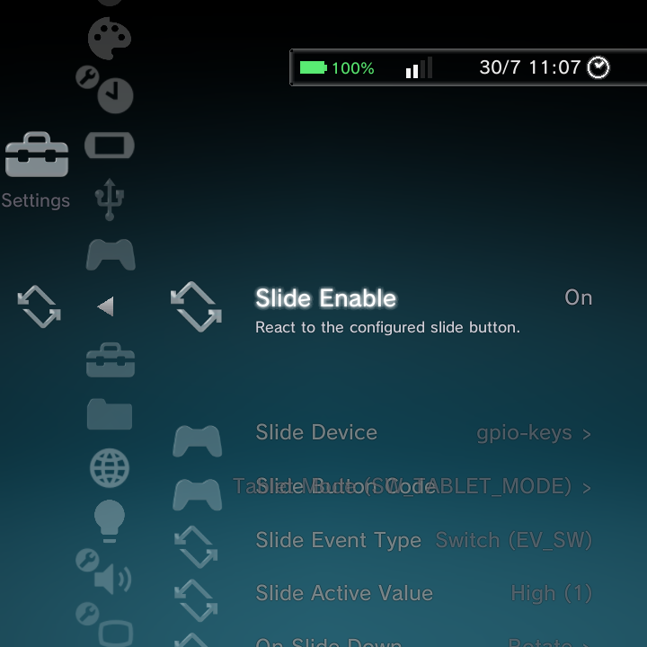
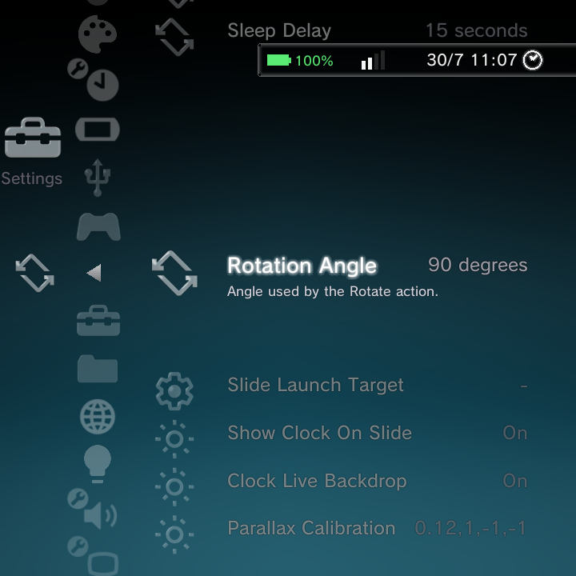

Some handhelds have a sliding or swivelling screen, like the RG Rotate. GammaOS can react when you slide the screen: rotate the display, sleep or wake, launch something, or show a slick PSP-style clock. It is all under Settings > Slide Behaviour.

This page is for devices with a slide or swivel sensor. On a device without one, these settings have no effect.
Telling GammaOS about your slide sensor
The first rows describe the hardware, so GammaOS knows which signal to watch:
| Option | What it does | Example |
|---|---|---|
| Slide Enable | React to the slide button at all | On |
| Slide Device | Which input device reports the slide | gpio-keys |
| Slide Button Code | The event code that device sends | TABLET_MODE |
| Slide Event Type | The kind of event | Switch (EV_SW) |
| Slide Active Value | Which state counts as engaged | High (1) |
These defaults are already correct for supported devices. You only touch them if you are adapting the feature to new hardware.
What happens when you slide
Two rows decide the actions:
- On Slide Down: what happens when you slide the screen. Choose from Rotate, Sleep, Wake, Launch, or the PSP Clock (you can pick more than one).
- On Slide Up: what happens when you slide it back.
Supporting options:
- Sleep Delay: how long to wait before sleeping (for the Sleep action).
- Rotation Angle: the angle used by the Rotate action (for example 90 degrees).
- Slide Launch Target: the app or mode to open (for the Launch action).
Square-panel landscape lock (RG Rotate)
On the RG Rotate's square 720x720 panel there is no aspect ratio to tell portrait from landscape apart, so games could end up rendering into only half the screen. Nano now forces launched apps to landscape in both slide positions, so a game fills the panel whether the device is open or closed.
Rotation in normal Android
The slide/swivel rotation is respected in normal Android (desktop/TV) mode too, not just in Nano. For the desktop-mode Screen Orientation controls that pair with this, see the Full-Android desktop features page.
The PSP clock
When the PSP Clock action is set, sliding the screen shows a large, polished analog clock, in the spirit of the PSP's clock. It is a lovely way to use the device as a desk clock when it is slid open.
The slide clock now appears over a running game in the DSi and Minima themes as well as XMB, so closing the device always drops the clock over whatever you were playing. In home or wallpaper mode it shows your wallpaper or the active theme's own background behind it instead of the XMB wave.

Two options tune how it looks:
- Show Clock On Slide: turn the clock on or off when you slide.
- Clock Live Backdrop: when on, whatever is behind the clock (your game or the home) shows through and refracts behind the glass, instead of a flat backdrop.
- Parallax Calibration: tunes the subtle parallax effect that shifts the clock as you tilt the device, using the motion sensor.
The clock reads the time from your device, so make sure your Date and Time is set. Turn on Clock Live Backdrop for the nicest effect while a game is running behind it.
Where to go next
- Gamepad & Remapping for controller options.
- Settings Reference for the whole Settings tree.